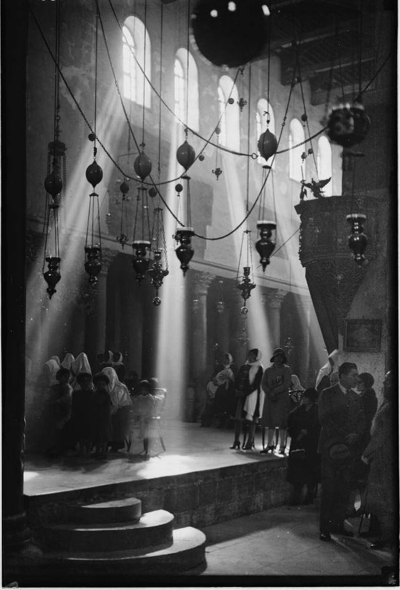
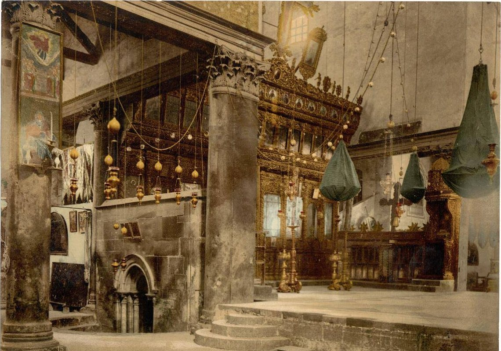
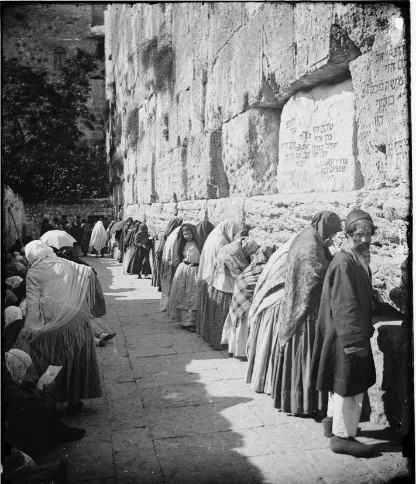
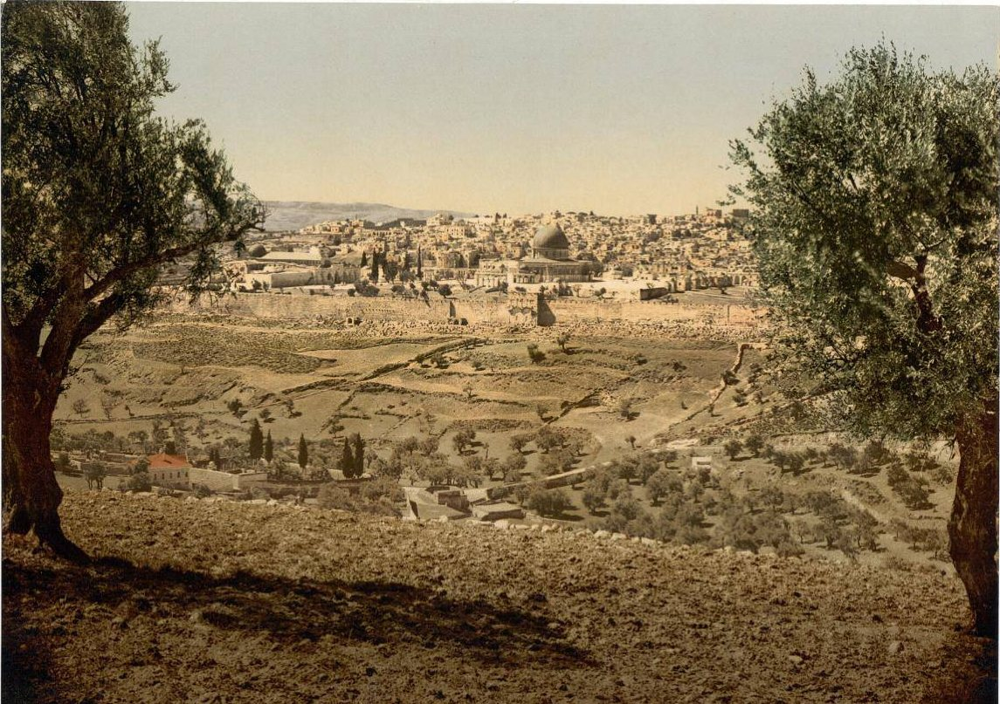
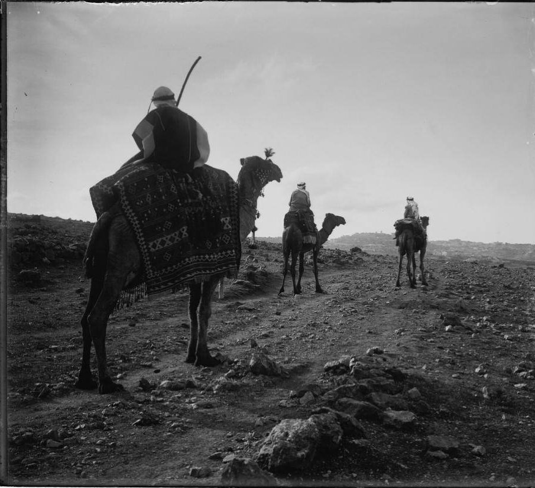
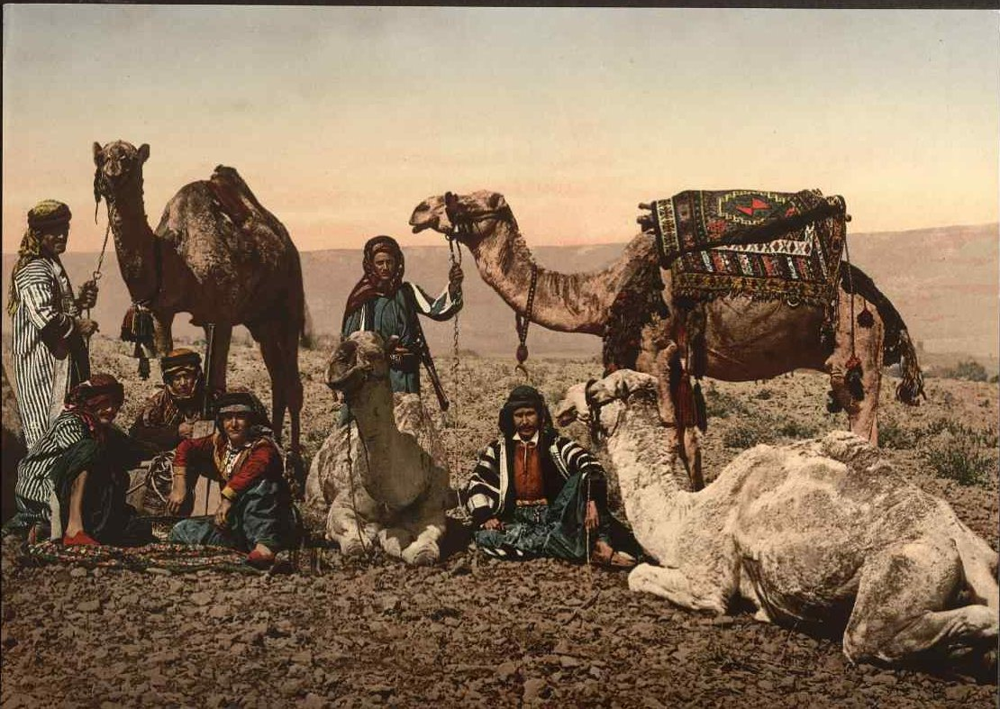
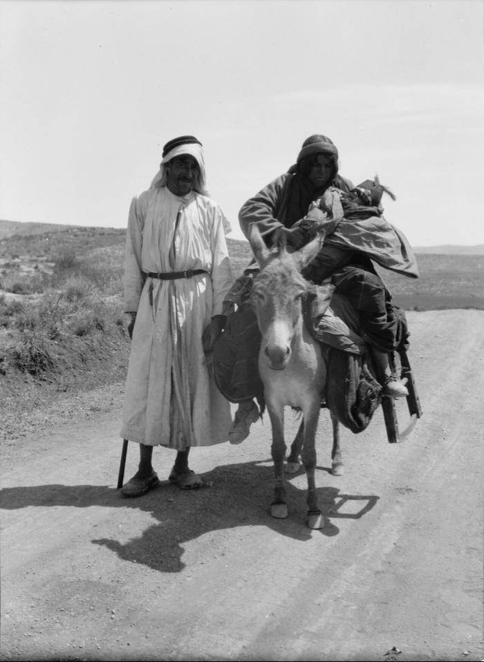
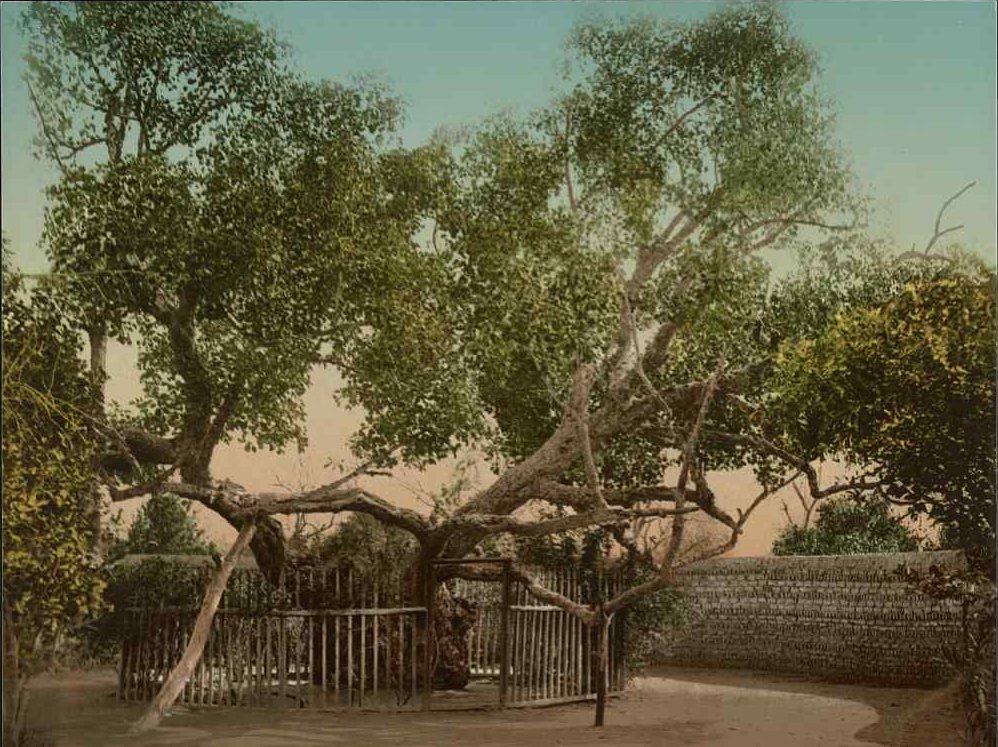

성탄에서 주현절까지, 그림 네 점으로 걷는 성탄 이야기. 성탄절과 그 뒤 세 주일, 그림 한 점에 질문 하나. 구유를 밝힌 빛에서 이집트로 가는 밤길까지.
1 그림을 함께 보고2 질문을 던지고3 그 시절로 가 본 뒤4 본문을 같이 읽어요
그림 아래 아이에게 보여 주기를 누르면 그림과 그 땅의 옛 사진을 화면 가득 띄우고, 질문을 하나씩 넘길 수 있어요. 흑백 사진은 누르면 AI로 색을 입힌 가상 복원으로 바뀌어요.
검수 전 초안이에요. AI가 출처를 모아 쓴 글이라, 카드마다 맨 아래 ‘근거 보기’와 대조해 확인해 주세요.
네 장면을 잇는 두 말: “빛”(요 1:9 · 눅 2:32)과 “밤”(마 2:14). 세상에 온 참 빛, 시므온이 품에 안은 ‘이방을 비추는 빛’, 박사들을 앞서 인도한 별(마 2:9). 그리고 요셉 가족은 그 아기를 품고 밤길을 떠났어요.
「밤의 탄생」 헤르트헨 토트 신트 얀스, 1490년 무렵 영국 런던, 내셔널 갤러리
성탄절 · 빛으로 오신 아기12월 25일 성탄절 · 요한복음 1:1~14
이 그림이 여는 질문
아기 예수님한테서 정말 빛이 났어요?
캄캄한 밤, 마구간을 밝히는 빛은 촛불도 등불도 아닌 아기에게서 나옵니다.
그림 속에서 찾아보기
빛이 나오는 곳을 모두 찾아보세요. 아기 말고도 두 군데가 더 있어요.
뒤쪽 언덕을 보세요. 불가에 모인 목자들과, 그 위 하늘에서 빛나는 천사가 보이나요?
구유 뒤 어둠 속에서 아기를 들여다보는 동물을 찾아보세요. 오른쪽 위 어둠 속에 서 있는 사람은 누구일까요?
이야기
요한복음은 예수님이 태어나신 밤을 그리는 대신 맨 처음으로 거슬러 올라가요. “태초에 말씀이 계시니라”(1:1). 그 말씀이 사람이 되어 우리 가운데 오셨다고 하지요(1:14). 요한은 그분을 빛이라고 불러요. “빛이 어둠에 비치되 어둠이 깨닫지 못하더라”(1:5), “참 빛 곧 세상에 와서 각 사람에게 비추는 빛이 있었나니”(1:9).
1490년 무렵 네덜란드 하를럼의 화가 헤르트헨이 그린 작은 그림이에요. 세로 34센티미터, 가로 25센티미터로 A4 종이보다 조금 커요. 14세기 스웨덴의 성녀 비르기타는 환상 속에서 예수님이 태어나시는 모습을 보았는데, 아기에게서 나온 빛이 너무 밝아서 요셉이 켜 둔 촛불은 아무 빛도 내지 못했다고 적었어요. 이 그림의 빛도 그 이야기에서 왔어요.
어두운 밤 장면을 이렇게 그리는 방식은 지금은 사라진 휘호 판 데르 휘스의 ‘밤의 탄생’ 그림 두 점을 본떴다고 해요. ‘헤르트헨 토트 신트 얀스’는 ‘성 요한 형제회의 꼬마 헤라르트’라는 뜻의 별명이에요. 하를럼의 성 요한 기사단 집에 머물며 그림을 그렸고, 스물여덟 살쯤에 세상을 떠났다고 전해요.
알고 보면
성경에는 예수님이 태어나신 날짜가 나오지 않아요. 12월 25일에 성탄을 기억했다는 가장 오래된 기록은 354년 로마에서 만든 달력 모음집에 실린 한 줄, “1월 초하루 여드레 전(12월 25일), 그리스도께서 유대 베들레헴에서 나시다”예요. 이 목록은 336년에 처음 만들어졌다고 봐요. 왜 하필 이날인지는 학자들 사이에 여러 설명이 있어요.
그 시절로 가 보기
그곳은 · 베들레헴 예수탄생교회대림절 3주에 본 ‘탄생 동굴’ 위에 선 교회예요. 앞쪽 제단 양옆의 계단으로 내려가면 그 동굴이 나와요.

성탄 무렵의 예수탄생교회 · 1940년대 사진가의 기록장에 적힌 제목은 ‘베들레헴. 성탄 무렵 예수탄생교회 안, 햇살’이에요. 높은 창으로 들어온 햇빛이 어두운 교회 안을 가로질러요. 그림 속 마구간처럼, 어두울수록 빛이 더 잘 보여요. 원본 크게 보기가상 복원 · AI가 색을 짐작해 입힌 것이라 실제 색과 다를 수 있어요.

같은 교회 · 1890년대 컬러 인쇄본 제단 양옆에는 뾰족한 아치 문이 하나씩 있어요(사진에는 한쪽이 보여요). 그 문으로 계단을 내려가면 예수님이 나신 곳으로 기억해 온 ‘탄생 동굴’이 나와요. 흑백 원판에 사진가의 색 메모대로 색을 입혀 찍어 낸 ‘포토크롬’이에요. 원본 크게 보기
눈 감고 상상해 보기전기가 없던 시절, 해가 지면 작은 등잔 하나가 밤을 밝혔어요. 그런 밤에 갓 태어난 아기 곁을 지킨다면 어떤 소리가 들리고 어떤 냄새가 날까요?
성탄 후 첫 주일 · 성전의 두 노인12월 27일 성탄 후 첫 주일 · 누가복음 2:22~40
이 그림이 여는 질문
시므온 할아버지는 아기를 어떻게 알아봤어요?
거대한 성전의 어둠 속, 한 줄기 빛이 아기와 아기를 안은 노인 위에 내려앉습니다.
그림 속에서 찾아보기
그림에서 가장 밝은 곳을 찾아보세요. 빛은 어디에서 나오는 것 같나요?
아기를 안은 시므온 할아버지는 어디를 올려다보고 있나요? 하나님을 찬송하는 중이에요(2:28).
왼쪽에서 손을 들고 선 사람을 찾아보세요. 여예언자 안나로 보는 설명이 있어요. 그 앞에 앉은 요셉은 무엇을 가져왔을까요(2:24)?
이야기
아들을 낳은 지 사십 일이 차면(레 12:2~4), 마리아와 요셉은 모세의 법대로 아기를 데리고 예루살렘 성전에 올라갔어요(2:22). 맏아들을 주께 드리고, “산비둘기 한 쌍이나 혹은 어린 집비둘기 둘로” 제사하려고요(2:24).
성전에는 시므온이라는 노인이 있었어요. 그는 “주의 그리스도를 보기 전에는 죽지 아니하리라”는 성령의 지시를 받은 사람이었어요(2:26). 시므온은 아기를 안고 하나님을 찬송했어요. “내 눈이 주의 구원을 보았사오니”(2:30). 그때 여든네 살의 여예언자 안나도 나아와 하나님께 감사하고, 예루살렘의 속량을 바라는 모든 사람에게 아기에 대하여 말했어요(2:36~38).
1631년, 스물다섯 살의 렘브란트가 고향 레이던에서 그린 그림이에요. 같은 해에 그는 암스테르담으로 옮겨 갔어요. 사람들은 커다란 성당 같은 성전 안에 아주 작게 그려져 있어요. 미술관은 화가가 레이던의 큰 교회를 본떠 그렸을지 모른다고 설명해요. 빛은 마치 아기에게서 나오는 것처럼 보여요.
알고 보면
산비둘기 한 쌍은 넉넉하지 않은 집의 제물이었어요. 율법은 “어린 양을 바치기에 힘이 미치지 못하면” 비둘기 두 마리를 가져오라고 했거든요(레 12:8). 그림 속 요셉도 비둘기 두 마리를 들고 있어요. 그리고 렘브란트는 이 그림을 그리고 38년 뒤에 세상을 떠났는데, 그때 끝내지 못하고 남은 마지막 그림도 아기를 안은 시므온이었어요(스웨덴 스톡홀름 국립미술관).
그 시절로 가 보기
그곳은 · 예루살렘 성전헤롯 왕은 기원전 19년 무렵부터 성전을 크게 다시 짓고, 성전이 선 산을 거대한 돌벽으로 둘러 넓고 평평한 마당을 만들었어요. 제자들도 그 돌을 보고 “선생님이여 보소서 이 돌들이 어떠하며”라고 감탄했지요(막 13:1). 성전은 기원후 70년 로마 군대에 무너졌지만, 그 마당을 받치던 돌벽 일부가 지금도 남아 있어요.

성전 마당을 받치던 서쪽 돌벽 · 1900년 헤롯이 쌓은 돌벽의 일부예요. 아래쪽의 아주 큰 돌들이 헤롯 때 쌓은 것이고, 그 위의 작은 돌들은 훨씬 뒤에 쌓았어요. ‘서쪽 벽’ 또는 ‘통곡의 벽’이라고 불러요. 지금도 유대인들이 이곳에서 기도해요. 원본 크게 보기가상 복원 · AI가 색을 짐작해 입힌 것이라 실제 색과 다를 수 있어요.

올리브산에서 본 예루살렘 · 1890년대 컬러 인쇄본 성벽 안의 넓고 평평한 마당이 옛 성전 터예요. 지금 그 위에 선 둥근 지붕 건물은 7세기 말에 지은 이슬람의 ‘바위 사원’이에요. 원본 크게 보기
눈 감고 상상해 보기아주 큰 돌로 쌓은 성전 마당에 처음 들어선 젊은 부부를 떠올려 보세요. 북적이는 사람들 틈에서 누군가 다가와 우리 아기를 알아본다면 어떤 마음이 들까요?
「동방박사의 경배」 조토 디 본도네, 1303~1304년 무렵 이탈리아 파도바, 스크로베니 예배당 벽화
주현절 · 별을 따라온 박사들1월 3일 주현절(1월 6일) 무렵 주일 · 마태복음 2:1~12
이 그림이 여는 질문
박사들이 본 별은 어떤 별이었어요?
파란 하늘을 가로지르는 별에 꼬리가 달렸습니다. 화가가 직접 본 혜성을 그렸다고 해요.
그림 속에서 찾아보기
하늘의 별을 찾아보세요. 우리가 아는 별 모양과 무엇이 다른가요?
무릎 꿇은 박사의 금관은 어디 있을까요? 왜 머리에서 벗어 놓았을까요?
오른쪽 천사가 손에 든 것은 무엇일까요? 낙타 곁의 젊은이는 어디를 보고 있나요?
이야기
예수님이 태어나신 뒤 동방에서 박사들이 예루살렘에 와서 물었어요. “유대인의 왕으로 나신 이가 어디 계시냐 우리가 동방에서 그의 별을 보고 그에게 경배하러 왔노라”(2:2). 헤롯 왕과 온 예루살렘이 소동했지요(2:3). 베들레헴으로 가는 길에 그 별이 다시 앞서 인도하자, 박사들은 “매우 크게 기뻐하고 기뻐하더라”(2:10). 집에 들어가 아기와 마리아를 보고 엎드려 경배하고, 황금과 유향과 몰약을 드렸어요(2:11).
1303~1304년 무렵 조토가 이탈리아 파도바의 스크로베니 예배당 벽에 그린 그림이에요. 베들레헴의 별을 꼬리 달린 혜성으로 그렸는데, 1301년에 나타난 핼리 혜성을 보고 그렸다고 보는 사람이 많아요(1304년에 나타난 다른 혜성이었을 수도 있다는 연구도 있어요). 1986년 핼리 혜성을 찾아간 유럽우주국의 탐사선 이름이 ‘조토’인 것도 이 그림 때문이에요. 이 탐사선은 혜성의 핵을 처음으로 가까이에서 찍었어요.
마태복음은 그 별이 어떤 별이었는지 말하지 않아요. 혜성, 행성들이 겹쳐 보인 것, 갑자기 밝아진 별 같은 여러 설명이 있지만 정해진 답은 없어요. 그림 속 첫째 박사는 금관을 벗어 바닥에 내려놓고 무릎을 꿇었어요. 더 큰 왕 앞에서 자기를 낮춘다는 표시로 봐요.
알고 보면
마태복음은 박사가 몇 명이었는지, 왕이었는지, 이름이 무엇인지 말하지 않아요. 선물이 세 가지라서 세 명으로 여기게 되었다고 보고(2세기 무렵부터), 5세기 무렵에는 왕으로 여기며 이름도 붙였어요. 6세기 이탈리아 라벤나의 모자이크에는 발타사르, 멜키오르, 가스파르라는 이름이 적혀 있어요. 낙타도 본문에는 없어요. “허다한 낙타 … 금과 유향을 가지고 와서”(사 60:6)라는 예언과 겹쳐 읽으면서 그림 속에 들어왔어요.
그 시절로 가 보기
그곳은 · 베들레헴으로 가는 길박사들은 먼저 왕이 사는 예루살렘으로 갔다가, 그곳에서 8킬로미터쯤 떨어진 작은 마을 베들레헴까지 별을 따라갔어요(2:1~9).

베들레헴으로 가는 ‘세 박사’ · 1898~1946년 사이 사진에 붙은 제목은 ‘저 멀리 베들레헴으로 가는 길 위의 세 박사’예요. 사진가가 박사들의 이야기를 떠올리며 찍은 사진이에요. 원본 크게 보기가상 복원 · AI가 색을 짐작해 입힌 것이라 실제 색과 다를 수 있어요.

사막에서 쉬는 낙타 몰이꾼들 · 1890년대 컬러 인쇄본 먼 길을 가는 사람들은 이렇게 낙타와 함께 쉬어 가며 길을 갔어요. 원본 크게 보기핼리 혜성 · 1986년 3월 8일 76년쯤마다 돌아오는 혜성이에요. 1986년에 다녀갔고, 다음에는 2061년에 돌아와요. 미국 항공우주국(NASA)이 함께한 국제 핼리 혜성 관측 사업에서 찍은 사진이에요. 원본 크게 보기
눈 감고 상상해 보기별 하나만 보고 먼 나라에서 길을 떠난다면 무엇을 챙기고, 가는 동안 일행과 무슨 이야기를 나눌까요?
조심할 점 ‘박사’로 옮긴 말은 별자리를 살펴 앞일을 풀이하던 사람들을 가리켜요. 별자리 운세 이야기로 흐르지 않게, ‘먼 나라에서 별을 보고 예수님을 찾아온 사람들’로 소개해 주세요. 세 명, 왕, 이름, 낙타는 성경 밖에서 생긴 전통이라는 것도 함께 알려 주면 좋아요.
함께 보기 · 선생님이 더 읽을 것
함께 느끼기 방의 ‘별 노래 아이들’(동방박사 옷을 입고 집집이 다니는 풍습)과 이어 보세요. 이 그림을 본 뒤, 주현절 무렵 주일에 종이 왕관과 별을 만들어 어르신 댁을 찾아가 보세요.
「이집트로 피신 중의 휴식」 카라바조, 1597년 무렵 이탈리아 로마, 도리아 팜필리 미술관
주현절 후 · 이집트로 가는 밤길1월 10일 주현절 후 첫 주일 · 마태복음 2:13~15
이 그림이 여는 질문
아기 예수님도 피난을 가셨어요?
먼 길을 가던 가족이 나무 아래 잠시 쉽니다. 천사가 바이올린을 켜고, 요셉은 악보를 들어 줍니다.
그림 속에서 찾아보기
천사가 켜는 악기는 무엇인가요? 악보를 들어 주는 사람은 누구인가요?
요셉 뒤 어둠 속에서 커다란 눈 하나가 내다보고 있어요. 누구일까요?
길에 가지고 다니던 짐을 찾아보세요. 마리아와 아기는 무엇을 하고 있나요?
이야기
박사들이 떠난 뒤 주의 사자가 요셉의 꿈에 나타나 말했어요. “헤롯이 아기를 찾아 죽이려 하니 일어나 아기와 그의 어머니를 데리고 애굽으로 피하여 내가 네게 이르기까지 거기 있으라”(2:13). “요셉이 일어나서 밤에 아기와 그의 어머니를 데리고 애굽으로 떠나가” 헤롯이 죽기까지 거기 있었어요(2:14~15). 마태는 이 일을 “애굽으로부터 내 아들을 불렀다”는 호세아의 말씀(호 11:1)과 이어요.
1597년 무렵 젊은 카라바조가 로마에서 그린 그림이에요. 성경에는 길에서 쉬었다는 이야기가 없지만, 화가들은 피난길의 가족이 잠시 쉬는 장면을 즐겨 그렸어요. 17세기에 화가들의 전기를 쓴 벨로리는 이 그림을 두고, 천사가 서서 바이올린을 켜고 앉은 요셉이 악보를 펼쳐 들어 준다고 적었어요. 그 곁에서 마리아는 아기를 품은 채 잠들어 있어요.
요셉이 든 악보는 진짜 악보예요. 플랑드르의 작곡가 노엘 바울데베인이 아가서의 말씀으로 지은 노래 「얼마나 아름다운지」(Quam pulchra es)라는 것이 1983년에 밝혀졌어요. 1519년이나 그 전에 지은, 마리아를 기리는 노래예요. 악보가 지금도 남아 있어서 실제로 불러 볼 수 있어요.
알고 보면
이집트의 콥트 교회는 예수님의 가족이 이집트 곳곳을 거쳐 갔다는 전승을 소중히 지켜 와요. 해마다 6월 1일(콥트 교회 달력으로 파숀스달 24일)을 ‘성가족이 이집트에 들어온 날’로 기념하지요. 다만 마태복음은 가족이 이집트 어디로, 얼마 동안 다녔는지 말하지 않아요.
그 시절로 가 보기
그곳은 · 이집트베들레헴에서 이집트까지는 광야를 지나야 하는 먼 길이에요. 그 시절 이집트는 로마가 직접 다스리던 땅이라, 헤롯 왕의 나라 바깥이었어요.

‘이집트로 피하는 길’ · 1930년대 사진가가 요셉과 마리아의 피난길을 떠올리며 찍은 사진이에요. 사진에 붙은 제목도 ‘이집트로 피하는 길: 나귀에 탄 여인과 아기, 서 있는 남자’예요. 원본 크게 보기가상 복원 · AI가 색을 짐작해 입힌 것이라 실제 색과 다를 수 있어요.

카이로의 ‘마리아의 나무’ · 1890년대 컬러 인쇄본 콥트 교회의 전승에 따르면 예수님의 가족이 이곳(옛 헬리오폴리스, 지금의 카이로 마타리야)의 나무 그늘에서 쉬어 갔어요. 사진의 나무는 1672년에 다시 심은 돌무화과나무예요. 삭개오가 올라간 나무와 같은 종류지요(눅 19:4). 이 나무는 2013년에 쓰러졌다가 다시 자라났어요. 원본 크게 보기
눈 감고 상상해 보기한밤중에 서둘러 집을 떠나야 한다면 무엇을 챙기고, 낯선 나라에 닿았을 때 어떤 마음이 들까요?
The Christmas story from Christmas Day to Epiphany, through four works of art. Christmas Day and the three Sundays after it: one picture and one question each, from the light in the manger to the night road to Egypt.
1 Look at the art together2 Ask the question3 Step back in time4 Read the passage together
Tap Show it to the children under the art to fill the screen with the picture and old photos of the land, one question at a time. Tap a black-and-white photo to switch to an AI-colorized version.
This is a draft awaiting review. AI gathered the sources and wrote the text, so please check each card against ‘Sources’ at the bottom.
Two words tie the four scenes together: “light” (John 1:9 · Luke 2:32) and “night” (Matt 2:14). The true light coming into the world, the ‘light for revelation to the nations’ that Simeon held in his arms, the star that went before the Magi (Matt 2:9). And Joseph’s family set out by night, carrying that child.
The Nativity at Night Geertgen tot Sint Jans, about 1490 The National Gallery, London, UK
Christmas · The baby who came as lightDec 25 · Christmas Day · John 1:1–14
The question this painting opens
Did baby Jesus really shine?
On a pitch-dark night, the light filling the stable comes not from a candle or a lamp but from the baby.
Things to find in the painting
Find every place where light is coming from. Besides the baby, there are two more.
Look at the hill in the background. Can you see the shepherds around a fire, and the shining angel in the sky above them?
Find the animal looking at the baby from the darkness behind the manger. Who is the man standing in the shadows at upper right?
The story
Instead of describing the night Jesus was born, John’s Gospel goes back to the very beginning: “In the beginning was the Word, and the Word was with God, and the Word was God” (1:1). That Word became a human being and came to live among us (1:14). John calls him light: “The light shines in the darkness, and the darkness hasn’t overcome it” (1:5); “The true light that enlightens everyone was coming into the world” (1:9).
Geertgen, a painter in Haarlem in the Netherlands, painted this small picture around 1490. It is 34 centimeters tall and 25 centimeters wide, a little bigger than a sheet of A4 paper. The fourteenth-century Swedish saint Bridget saw the birth of Jesus in a vision and wrote that the light from the baby was so bright that the candle Joseph had set there gave no light at all. The light in this painting comes from that story.
This way of painting a dark night scene is said to follow two night-time Nativity paintings by Hugo van der Goes that are now lost. ‘Geertgen tot Sint Jans’ is a nickname meaning ‘Little Gerard of the Brethren of St John.’ He painted while living with the Knights of St John in Haarlem, and he is said to have died at about twenty-eight.
Good to know
The Bible does not give the date Jesus was born. The oldest record of remembering his birth on December 25 is a single line in a collection of calendars made in Rome in 354: “Eight days before the Kalends of January (December 25), Christ was born in Bethlehem of Judea.” This list is thought to have first been made in 336. Scholars offer several explanations of why this date was chosen.
Step back in time
The place · The Church of the Nativity, BethlehemThis church stands over the ‘cave of the Nativity’ we saw in Advent week 3. Stairs on either side of the altar at the front lead down to the cave.
The Church of the Nativity at Christmastime · 1940s The title in the photographer’s logbook is ‘Bethlehem. Interior, Nativity Church at Xmas time. Sun’s rays.’ Sunlight from high windows cuts across the dark church. As in the painted stable, light shows best where it is dark. View the originalAI colorized · AI guessed the colors, so they may differ from the real ones.The same church · 1890s color print On either side of the altar there is a pointed arch doorway (one is visible in the photo). The stairs through it lead down to the ‘cave of the Nativity,’ long remembered as the place where Jesus was born. It is a ‘photochrom’: color was added to a black-and-white negative following the photographer’s color notes, and then printed. View the original
Close your eyes and imagineBefore electricity, a single small lamp lit up the night after the sun went down. If you were keeping watch beside a newborn baby on a night like that, what would you hear and smell?
Take care The glowing baby is the painter’s way of picturing the story. Keep it distinct from what the Bible means when it calls Jesus ‘light’ (1:4–9). For young children, ‘the Word became flesh’ (1:14) can simply be put as ‘God came as a baby, like us.’
See also · For teachers to read further
Compare it with Georges de La Tour’s The Newborn in the Experience Together room. In one painting a candle shielded by a hand gives the light; in the other, the baby does.
VCS exhibition The WordJohn 1:1–13 · a ninth-century Bible manuscript, a Byzantine mosaic icon, and a Copto-Arabic Gospel
The Revised Common Lectionary, used by many churches, sets John 1:1–14 as one of the Gospel readings for Christmas. PC(USA) lectionary page
Sources (9)
The National Gallery artwork page: about 1490, 34 × 25.3 cm; three sources of light (the child, the fire, the angel); St Bridget’s writings and Joseph’s candle; two lost night scenes by Hugo van der Goes
Simeon’s Song of Praise Rembrandt van Rijn, 1631 Mauritshuis, The Hague, the Netherlands
First Sunday after Christmas · Two old people in the templeDec 27 · First Sunday after Christmas · Luke 2:22–40
The question this painting opens
How did old Simeon recognize the baby?
In the darkness of the vast temple, a single beam of light comes to rest on the baby and the old man holding him.
Things to find in the painting
Find the brightest place in the painting. Where does the light seem to come from?
Where is Simeon looking as he holds the baby? He is praising God (2:28).
Find the person at left standing with a raised hand. Some explain this figure as the prophet Anna. What has Joseph, sitting in front, brought with him (2:24)?
The story
When the forty days after a son’s birth were over (Lev 12:2–4), Mary and Joseph took the baby up to the temple in Jerusalem, as the law of Moses required (2:22). They came to present their firstborn to the Lord and to offer a sacrifice: “A pair of turtledoves, or two young pigeons” (2:24).
In the temple was an old man named Simeon. The Holy Spirit had shown him that he would not die before he had seen the Lord’s Christ (2:26). Simeon took the baby in his arms and praised God: “for my eyes have seen your salvation” (2:30). Just then Anna, a prophet of great age, came up, gave thanks to God, and spoke about the child to everyone who was waiting for the redemption of Jerusalem (2:36–38).
Rembrandt painted it in 1631, when he was twenty-five and still living in his hometown of Leiden. He moved to Amsterdam the same year. The people are painted very small inside a temple that looks like a huge church; the museum suggests he may have modeled it on a large church in Leiden. The light seems to come from the baby himself.
Good to know
A pair of doves was the offering of a family that was not well off. The law said that a mother who could not afford a lamb should bring two doves or two young pigeons instead (Lev 12:8). In the painting, Joseph is holding two doves too. Rembrandt died 38 years after painting this, and the last painting he left unfinished at his death was again Simeon holding the baby (Nationalmuseum, Stockholm).
Step back in time
The place · The temple in JerusalemFrom about 19 BC, King Herod rebuilt the temple on a grand scale and surrounded the temple mount with huge stone walls to make a wide, flat courtyard. Even the disciples marveled at the stones (Mark 13:1). The temple was destroyed by the Roman army in AD 70, but part of the wall that held up the courtyard still stands.
The western wall that held up the temple courtyard · 1900 This is part of the wall Herod built. The very large stones at the bottom date from Herod’s time; the smaller stones above were added much later. It is called the ‘Western Wall’ or the ‘Wailing Wall,’ and Jews still pray here today. View the originalAI colorized · AI guessed the colors, so they may differ from the real ones.Jerusalem from the Mount of Olives · 1890s color print The wide, flat courtyard inside the walls is where the temple once stood. The domed building on it today is the Dome of the Rock, an Islamic shrine built at the end of the seventh century. View the original
Close your eyes and imaginePicture a young couple stepping into the temple courtyard of huge stones for the first time. If someone came up through the crowd and recognized your baby, how would you feel?
Take care For children, the purification rite (Lev 12) can simply be introduced as ‘the day the baby was presented to God.’ Simeon’s words to Mary about a sword piercing her soul (2:35) don’t need to be explained in depth to young children.
See also · For teachers to read further
Invite the oldest members of your church to class this day. Ask them to share how, like Simeon and Anna, they have prayed and waited for a long time, and to bless the children.
Mauritshuis artwork page: 1631, oil on panel, 60.9 × 47.9 cm; painted at twenty-five in Leiden (he moved to Amsterdam the same year); light that seems to come from the child; Joseph holding two doves; a temple perhaps modeled on a Leiden church
World English Bible: Luke 2:22, 24, 26, 28, 30, 35, 36–38 · Lev 12:2–4, 8 · Mark 13:1
Wikipedia, ‘Western Wall’: the retaining wall of the temple mount begun by Herod around 19 BC; the large lower stones from Herod’s time; the name ‘Wailing Wall’
Painting: Rembrandt van Rijn, Simeon’s Song of Praise, 1631, Mauritshuis, The Hague. Photo: Wikimedia Commons (public domain). Old photo: Library of Congress, Matson Collection, ‘Various views inside the city. Jews wailing place’ (1900, Wikimedia Commons, no known restrictions). 1890s color print: Library of Congress Photochrom Collection, ‘From the Mount of Olives, general view, Jerusalem’ (Wikimedia Commons, no known restrictions).
The Adoration of the Magi Giotto di Bondone, about 1303–1304 Fresco, Scrovegni Chapel, Padua, Italy
Epiphany · The Magi who followed the starJan 3 · Sunday near Epiphany (January 6) · Matthew 2:1–12
The question this painting opens
What kind of star did the Magi see?
The star crossing the blue sky has a tail. The painter is said to have painted a comet he saw himself.
Things to find in the painting
Find the star in the sky. How is it different from the star shape we know?
Where is the kneeling Magus’s gold crown? Why did he take it off?
What is the angel at right holding? Where is the young man beside the camels looking?
The story
After Jesus was born, Magi from the east came to Jerusalem and asked, “Where is he who is born King of the Jews? For we saw his star in the east, and have come to worship him” (2:2). King Herod and all Jerusalem were troubled (2:3). On the way to Bethlehem the star went before them again, and “When they saw the star, they rejoiced with exceedingly great joy” (2:10). They entered the house, saw the child with Mary, bowed down and worshiped him, and offered gifts of gold, frankincense, and myrrh (2:11).
Giotto painted this on a wall of the Scrovegni Chapel in Padua, Italy, around 1303–1304. He painted the Star of Bethlehem as a comet with a tail, and many think he painted it after seeing Halley’s Comet in 1301 (some research suggests it may have been another comet that appeared in 1304). That is why the European Space Agency named its 1986 spacecraft to Halley’s Comet ‘Giotto.’ The spacecraft took the first close-up pictures of a comet’s nucleus.
Matthew doesn’t say what kind of star it was. There are many explanations, such as a comet, planets appearing close together, or a star that suddenly grew bright, but there is no settled answer. In the painting, the first Magus has taken off his gold crown, set it on the ground, and knelt. It is read as a sign of humbling himself before a greater king.
Good to know
Matthew doesn’t say how many Magi there were, whether they were kings, or what their names were. Because there were three gifts, a tradition grew that there were three of them (from about the second century), and by about the fifth century they were thought of as kings and given names. A sixth-century mosaic in Ravenna, Italy, names them Balthassar, Melchior, and Gaspar. Camels aren’t in the passage either. They came into paintings as people read the story alongside Isaiah’s prophecy of “a multitude of camels” bringing gold and frankincense (Isa 60:6).
Step back in time
The place · The road to BethlehemThe Magi first went to Jerusalem, where the king lived, and then followed the star to the small town of Bethlehem, about 8 kilometers away (2:1–9).
The ‘Three Wise Men’ on the way to Bethlehem · between 1898 and 1946 The photo’s title is ‘Three “Wise Men” on way to Bethlehem in distance.’ The photographer took it with the story of the Magi in mind. View the originalAI colorized · AI guessed the colors, so they may differ from the real ones.Camel drivers resting in the desert · 1890s color print People on long journeys traveled like this, stopping to rest with their camels. View the originalHalley’s Comet · March 8, 1986 This comet comes back about every 76 years. It last came in 1986 and will return in 2061. The photo was taken for the International Halley Watch, a project NASA took part in. View the original
Close your eyes and imagineIf you set out from a faraway country with only a star to guide you, what would you pack, and what would you talk about with your companions on the way?
Old photos don’t show exactly how things looked 2,000 years ago, but they let you see the land and the everyday life of the Bible.
A question to ask the child
“If you could give Jesus a gift, what would you give?”
Even strangers from a faraway land came looking for the child and rejoiced with great joy (Matt 2:10). His light is a light for all people (Luke 2:32).
Take care The word translated ‘Magi’ or ‘wise men’ refers to people who studied the stars to interpret events and foretell the future. So that the lesson doesn’t drift into horoscopes, introduce them as ‘people from a faraway land who saw a star and came looking for Jesus.’ It also helps to mention that ‘three,’ ‘kings,’ their names, and the camels are traditions that grew up outside the Bible.
See also · For teachers to read further
Connect it with the ‘Star singers’ in the Experience Together room (dressed as the wise men, house to house). After looking at this painting, make paper crowns and stars and visit older members of the church on the Sunday near Epiphany.
Biblical Archaeology Society image note: the New Testament gives neither the number nor the names; three by the second century; kings and names by the fifth; the Ravenna mosaic
First Things, ‘Camels’: camels absent from Matthew; the painting tradition that read the story with Isaiah 60
World English Bible: Matt 2:1–12 · Isa 60:6 · Luke 2:32; the Korean Bible Society’s glossary notes (in Korean): magi as astrologers, Bethlehem about 8 km from Jerusalem
Painting: Giotto di Bondone, The Adoration of the Magi, about 1303–1304, Scrovegni Chapel, Padua. Photo: Wikimedia Commons (Web Gallery of Art, public domain). Old photo: Library of Congress, Matson Collection, ‘Three “Wise Men” on way to Bethlehem in distance’ (between 1898 and 1946, Wikimedia Commons, no known restrictions). 1890s color print: Library of Congress Photochrom Collection, ‘Camels halting in the desert, Holy Land’ (Wikimedia Commons, no known restrictions). Comet photo: W. Liller, International Halley Watch (NASA), ‘Lspn comet halley’ (1986, Wikimedia Commons, public domain).
Rest on the Flight into Egypt Caravaggio, about 1597 Doria Pamphilj Gallery, Rome, Italy
After Epiphany · The night road to EgyptJan 10 · First Sunday after Epiphany · Matthew 2:13–15
The question this painting opens
Did baby Jesus have to flee too?
A family on a long journey rests for a while under a tree. An angel plays the violin, and Joseph holds the music.
Things to find in the painting
What instrument is the angel playing? Who is holding the music?
A big eye is peeking out of the darkness behind Joseph. Whose is it?
Find the bags they carried on the road. What are Mary and the baby doing?
The story
After the Magi left, an angel of the Lord appeared to Joseph in a dream. Herod was going to search for the child to kill him, so Joseph was to take the child and his mother, “flee into Egypt, and stay there until I tell you” (2:13). “He arose and took the young child and his mother by night, and departed into Egypt” (2:14), and they stayed there until Herod died. Matthew links this to Hosea’s words, “Out of Egypt I called my son” (2:15; Hos 11:1).
The young Caravaggio painted this in Rome around 1597. The Bible doesn’t say the family stopped to rest on the way, but painters loved to show the family resting for a moment on their flight. Bellori, who wrote lives of painters in the seventeenth century, described an angel standing and playing the violin while Joseph, seated, holds the music open for him. Beside them, Mary has fallen asleep holding the baby.
The music Joseph holds is real. In 1983 it was identified as ‘How beautiful you are’ (Quam pulchra es), a song by the Flemish composer Noël Bauldeweyn on words from the Song of Songs. It honors Mary and was written in or before 1519. The music still survives, so you can actually sing it.
Good to know
The Coptic Church of Egypt treasures the tradition that Jesus’ family traveled through many parts of Egypt. Every year on June 1 (24 Pashons in the Coptic calendar) it celebrates the ‘Entry of the Holy Family into Egypt.’ But Matthew doesn’t say where in Egypt the family went or how long they stayed.
Step back in time
The place · EgyptFrom Bethlehem to Egypt was a long journey through the wilderness. At that time Egypt was ruled directly by Rome, outside King Herod’s kingdom.
‘Flight into Egypt’ · 1930s The photographer took this picture with Joseph and Mary’s flight in mind. The photo’s title, too, begins ‘Flight into Egypt’ and describes a woman and infant on a donkey and a man standing. View the originalAI colorized · AI guessed the colors, so they may differ from the real ones.‘Mary’s Tree’ in Cairo · 1890s color print According to Coptic tradition, Jesus’ family rested in the shade of a tree here (ancient Heliopolis, today’s Matariya in Cairo). The tree in the photo is a sycamore fig replanted in 1672, the same kind of tree Zacchaeus climbed (Luke 19:4). It fell in 2013 and has grown again. View the original
Close your eyes and imagineIf you had to leave home in a hurry in the middle of the night, what would you take, and how would you feel when you reached a strange country?
Take care There’s no need to tell young children the details of what Herod did next (2:16–18). Some children in your class may have moved, fled, or immigrated. Don’t blame anyone for a family having to leave home; tell it as the story of God protecting that family.
See also · For teachers to read further
If someone in your church once had to flee as a refugee (in Korea, many older people did during the Korean War), ask them ahead of time to share briefly what they took with them on the road. Children will feel Joseph’s family’s night journey much more closely.
Wikipedia, ‘Rest on the Flight into Egypt (Caravaggio)’: about 1597, 135.5 × 166.5 cm, Doria Pamphilj Gallery, Rome; a scene from legend, not the Bible; Joseph holds a motet by Bauldeweyn (Song of Songs, dedicated to the Madonna)
OnePeterFive article: Bellori’s description (a standing angel playing the violin, Joseph seated holding the music open); the sleeping Mary
Sartle: the score identified in 1983 as Quam pulchra es; the flight scenes painted from the late 14th century
osjusa.org article: a motet by Noël Bauldeweyn (about 1480–1530) on words from Song of Songs 7


_standing_LOC_matpc.19007.jpg){kind=link}